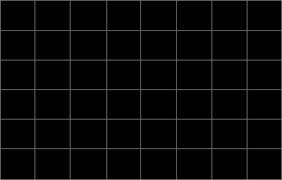

<ion-row style="height: 400px;">
  <ion-col no-padding>
  </ion-col>
  <ion-col no-padding col-auto padding-top>
    <ion-row nowrap>
      <ion-col col-auto>
        <button ion-button small text-nowrap [disabled]="isCalmode" (click)="graphScaleSwitch()" [class]="isGraphScaleChecked ? 'rtVswrbtnChecked' : 'rtVswrbtnUnchecked' "
          style="height:32px; width: 62px; font-size: 12px">Return<br/>Loss</button>
      </ion-col>
      <ion-col>
      </ion-col>
      <ion-col col-auto>
        <button ion-button small text-nowrap [disabled]="isCalmode" (click)="graphScaleSwitch()" [class]="isGraphScaleChecked ? 'rtVswrbtnChecked' : 'rtVswrbtnUnchecked' "
          style="height:32px; width: 62px; font-size: 12px;">VSWR</button>
      </ion-col>
    </ion-row>
    <ion-row nowrap>
      <ion-col col-auto align-self-stretch>
        <ion-row style=" width:30px;height: 41px;" *ngFor="let obj of currentRlScale">
          <ion-col no-padding align-self-end text-nowrap text-right>
            {{obj.val}}
          </ion-col>
        </ion-row>
      </ion-col>
      <ion-col no-padding style="width:400px;">
        <ion-row #markercontainer style="height: 32px;">
          <ion-col no-padding align-self-end *ngIf="SelectedBand && markers" style="position: relative;height:25px;">
            <div *ngFor="let marker of markers;let i = index;" style="width:100%;position: absolute;">
              <input type="range" class="marker" [min]="marker.start" [max]="marker.stop" [(ngModel)]="marker.markerval" (click)="markerSelected(i)" />
              <span text-center class="markerlabel" [style.left]="getMarkerLblLeft(marker)">M{{i+1}}</span>
            </div>
          </ion-col>
          <ion-col no-padding align-self-end *ngIf="isDTFmode && markers" style="position:relative; height:25px;">
            <div *ngFor="let marker of markers;let i = index;" style="width:100%;position: absolute;">
              <input type="range" class="marker" min="0.0" [attr.max]="isLengthUnitChecked ? 49.21 : 15.0" step="0.01" [(ngModel)]="marker.markerval"
                (click)="markerSelected(i)" />
              <span text-center class="markerlabel" [style.left]="getMarkerLblLeftDTF(marker.markerval)">M{{i+1}}</span>
            </div>
          </ion-col>
        </ion-row>
        <ion-row style="position: relative;">
          <ion-col no-padding align-self-stretch style="position:absolute;">
            
          </ion-col>
          <ion-col no-padding align-self-stretch style="position:absolute;">
            <svg viewBox="0 0 400 256" preserveAspectRatio="none" height="256px" width="100%">
              <polyline *ngIf="graphdata" [attr.points]="getLinePoints(graphdata)" style="fill:none;stroke:green;stroke-width:1.5" />
            </svg>
          </ion-col>
          <ion-col no-padding align-self-stretch *ngIf="SelectedBand && !isDTFmode" style="position: absolute;">
            <input type="range" class="marker-line" *ngFor="let marker of markers;let i = index;" [min]="marker.start" [max]="marker.stop"
              [(ngModel)]="marker.markerval" />
          </ion-col>
          <ion-col no-padding align-self-stretch *ngIf="isDTFmode" style="position: absolute;">
            <input type="range" class="marker-line" *ngFor="let marker of markers;let i = index;" min="0.0" [attr.max]="isLengthUnitChecked ? 49.21 : 15.0"
              step="0.01" [(ngModel)]="marker.markerval" />
          </ion-col>
        </ion-row>
      </ion-col>
      <ion-col col-auto align-self-stretch style="z-index:-10;">
        <ion-row style=" width:30px;height: 41px;" *ngFor="let obj of currentVswrScale">
          <ion-col no-padding nowrap align-self-end text-nowrap>
            {{obj.val}}
          </ion-col>
        </ion-row>
      </ion-col>
    </ion-row>
    <ion-row style="height: 12px;">
    </ion-row>
    <ion-row nowrap *ngIf="SelectedBand" align-items-center style="height: 30px;">
      <ion-col no-padding col-auto style="width: 45px;"></ion-col>
      <ion-col no-padding>
        {{SelectedBand.start}}
      </ion-col>
      <ion-col no-padding col-auto text-center>
        {{SelectedBand.middle}} MHz
      </ion-col>
      <ion-col no-padding text-right>
        {{SelectedBand.stop}}
      </ion-col>
      <ion-col no-padding col-auto style="width: 45px;"></ion-col>
    </ion-row>
    <ion-row *ngIf="isDTFmode" style="position: relative;height: 30px;">
      <ion-col no-padding align-self-center>
        <ion-row>
          <ion-col no-padding align-self-center text-center *ngFor="let obj of currentLengthScale">{{obj.val}}</ion-col>
        </ion-row>
      </ion-col>
      <ion-col no-padding style="position: absolute; right:0;" text-right>
        <button ion-button no-margin small text-capitalize color="none" class="meterFtbtn" (click)="LengthUnitSwitch()"> 
           <span *ngIf="!isLengthUnitChecked">M</span>
            <span *ngIf="isLengthUnitChecked">Ft</span>
          </button>
      </ion-col>
    </ion-row>
  </ion-col>
  <ion-col no-padding>
  </ion-col>
</ion-row>